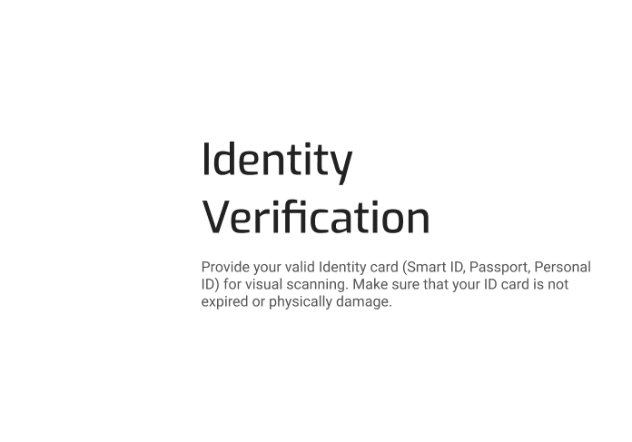

Experience KYC - an advanced e-KYC solution for seamless customer verification. Utilizing
tech, ensure compliance and elevate onboarding.
KYC verification operates through sophisticated technology and data analysis, guaranteeing customer
identity authentication, regulatory adherence, and heightened onboarding process security.
Achieve compliance, reduce fraud and build customer trust across all industries around the world.

Keep pace and remain compliant with evolving KYC regulations.
Learn more
.png)
Meet customer expectations for fast, secure onboarding in a rapidly changing industry.
Learn more
.png)
Achieve KYC compliance that transcends borders and helps you defend against fraud and identity theft
Learn more
.png)
Create a trusted ecosystem with verified vendors and customers to gain a competitive advantage.
Learn more

Provide a fast, smooth customer experience while meeting extensive compliance obligations worldwide.
Learn more
Deliver comprehensive identity verification that protects your payments business and customers.
Learn more

Keep pace and remain compliant with evolving KYC regulations.
Learn more
The KYC platform revolutionizes customer verification with cutting-edge technology, ensuring seamless, secure, and compliant processes. Eliminating manual checks, it enables remote verification, boosts operational efficiency, and builds trust. This innovative platform sets a new standard, transforming businesses for a streamlined and secure future.
26 %
We ensure a higher customer onboarding rate by 26% with minimum false positives. Our solution helps companies identify potential fraud while still allowing legitimate customers to be onboarded quickly & easily.
46 %
Fully-Verified reduces the cost of each verification by an impressive 46%, helping businesses save money while maintaining the highest standards of identity verification.
76 %
Whether you're a business seeking to streamline customer registration or an individual eager to join a platform hassle-free, our solution ensures a seamless and efficient experience.
KYC verification operates through sophisticated technology and data analysis, guaranteeing customer identity authentication, regulatory adherence, and heightened onboarding process security.
Our commitment to quality and compliance allows our clients to run their businesses confidently. With a 4.5 customer satisfaction score, verifications double-check process, 30-second response time, and significant pass rate improvements, Fully-Verified is the trusted partner for businesses seeking exceptional KYC verification services while maintaining the lowest cost possible.
KYC verification operates through sophisticated technology and data analysis, guaranteeing customer identity authentication, regulatory adherence, and heightened onboarding process security.
1. Conversion optimised
2. Compliance with the strictest regulations
3. Fully customizable
4. AI-powered fraud prevention
KYC verification operates through sophisticated technology and data analysis, guaranteeing customer identity authentication, regulatory adherence, and heightened onboarding process security.
1. Seamless onboarding experience
2. Availible anytime, anywhere on all devices
3. AI-guided verification process
4. Verification in a matter of secods
VerifyMe KYC Verification application is a digital tool designed to streamline and enhance the customer onboarding process for businesses and financial institutions. KYC is a critical procedure mandated by regulatory authorities to verify the identity and assess the risk associated with potential customers or clients before engaging in any business relationship with them.
Automatically verify users from all over the world in matter of seconds:
Verify identities, conduct risk assessments, and perform due diligence checks in just 10 seconds, while reducing operational expenses by up to 46%.
Learn more
.png)
Eliminate risk of cybercrimes, financial crimes and money laundering with a Fully-Verified identity verification tools.
Eliminate risk of cybercrimes, financial crimes and money laundering with a Fully-Verified identity verification tools.
Learn more
.png)
A banking-grade verification with same legal enforceability as in person KYC:
Live-Verify ensures regulatory compliance, robust banking-grade security, and seamless onboarding with protection against cyber threats and fraud.
Learn more
VerifyMe KYC Verification application is a digital tool designed to streamline and enhance the customer onboarding process for businesses and financial institutions. KYC is a critical procedure mandated by regulatory authorities to verify the identity and assess the risk associated with potential customers or clients before engaging in any business relationship with them.
Prevent underage access to restricted resources and protect your company from non-compliance fines.
Learn more